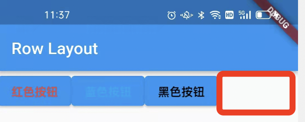
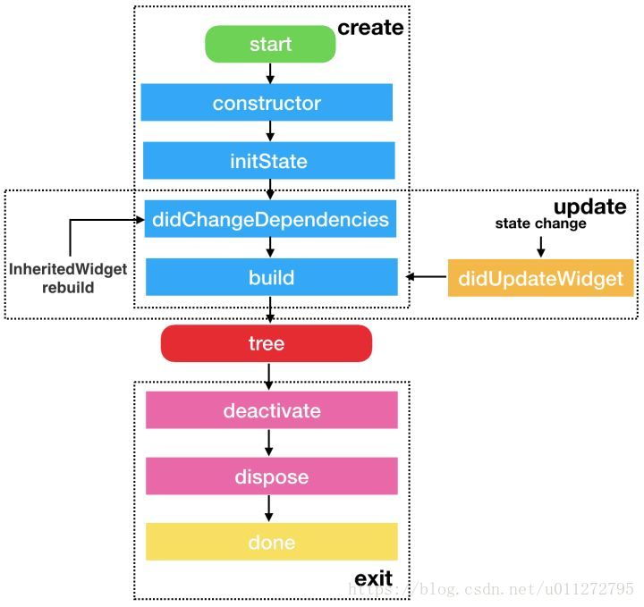

Flutter基础入门
1、Mac 安装
- 配置SDK
-
下载SDK
-
配置环境变量
bash export PATH="$PATH:`pwd`/flutter/bin"
pwd为flutter SDK的解压路径
- 检查依赖项
bash
flutter doctor
按照提示将所有的错误修改过来，直到检测没有问题
-
安装Android studio就可以使用
-
安装Flutter和Dart插件
-
配置VSCode
-
下载Flutter插件
2、Hello Word 第一个实例
- 热更新 可以随时更新
- Vscode
o切换预览模式 如Android ios mac
3、常用组件
3.1 Text常用组件
- TextAlign 文本对齐方式
- maxLines 设置行数
- overflow 设置文本溢出
- clip 直接切断
- ellipsis 显示省略号
- fade 显示渐变效果
- style
3.2 Container组件
- Alignment 容器内child的对其方式 纵向+横向
- 宽高和颜色属性 和前端html一致
- padding 内边距
- const EdgeInsets.all(data)
- const EdgeInsets.fromLTRB(v1,v2,v3,v4)
- margin. 外边距
- const EdgeInsets.all(data)
- const EdgeInsets.fromLTRB(v1,v2,v3,v4)
- decoration 装饰 修饰背景和边框
- BoxDecoration 实现渐变
- border 边框
3.3 Image 图片组件的使用
- 加载图片的方式
-
Image.asset: 加载资源图片，就是将加载项目资源目录中的图片，加入图片后会增大打包的体积，使用相对路径
加载相对路径时，需要在pubsec.yaml中添加
dart assets: - images/1.webp //相对路径的资源 -
Image.network: 网络资源图片
-
Image.file： 加载本地图片，就是加载本地文件中的图片，与包体无关
-
Image.memory： 加载Unit8List资源图片
- Fit 控制图片的拉伸和挤压
- BoxFit.fill ：全图显示，图片会被拉伸，并充满父容器
- BoxFit.contain：全图显示，显示原比例，可能会有空隙
- BoxFit.cover：原比例覆盖父容器，但可能会被裁减
- BoxFit.fitWidth：横向充满容器，纵向可能会被拉伸，可能被裁减
- BoxFit.fitHeight：纵向充满容器，横向可能会被拉伸，可能被裁减
- BoxFit.scaleDown：全图显示，但不允许超过原图片大小
- colorBlendMode 图片混合模式
- Color 和 colorBlendMode混合使用，可以修改图片的颜色
- repeat 图片重复
- ImageRepeat.repeat：横向和纵向都进行重复
- ImageRepeat.repeatX: 横向重复，纵向不重复
- ImageRepeat.repeatY: 纵向重复，横向不重复
3.4 ListView
-
使用Widget 数组
-
ListTitle组件
-
title:Text
- subtitle:Text
-
leading: icon
-
图片列表
dart
body: new ListView(
children:<Widget>[
new Image.network(
'http://jspang.com/static/upload/20181111/G-wj-ZQuocWlYOHM6MT2Hbh5.jpg'
),
new Image.network(
'http://jspang.com/static/upload/20181109/1bHNoNGpZjyriCNcvqdKo3s6.jpg'
),
new Image.network(
'http://jspang.com/static/myimg/typescript_banner.jpg'
),new Image.network(
'http://jspang.com/static/myimg/smile-vue.jpg'
)
]
),
-
横向列表
-
scrollDirection:Axis.horizontal
-
优化代码：一切皆组件，可以将组件的形式用类实现，拆分出组件
dart
class MyList extends StatelessWidget{
@override
Widget build(BuildContext context){
return ListView(
scrollDirection: Axis.horizontal,
children: <Widget>[
new Container(
width:180.0,
color: Colors.lightBlue,
), new Container(
width:180.0,
color: Colors.amber,
), new Container(
width:180.0,
color: Colors.deepOrange,
),new Container(
width:180.0,
color: Colors.deepPurpleAccent,
),
],
);
}
}
-
动态列表
-
传入参数
dart void main () => runApp(MyApp( items: new List<String>.generate(1000, (i)=> "Item $i") )); -
接收参数
dart final List<String> items; MyApp({Key ?key, @required this.items}):super(key:key); -
显示参数 ListView.builder
dart body: new ListView.builder( itemCount: items.length, itemBuilder: (context,index){ return new ListTile( title: new Text('${items[index]}'), ); }, ), -
网格列表 GridView
-
padding 网格内边距
- crossAxisSpacing 网格间间距
- crossAxisCount 网格的列数
- childAspectRatio 宽高比
dart
body: GridView.count(
crossAxisCount: 3,
padding: const EdgeInsets.all(10),
crossAxisSpacing: 20.0,
children: <Widget>[
const Text('This is 1'),
const Text('This is 2'),
const Text('This is 3'),
const Text('This is 4'),
const Text('This is 5'),
],
),
3.5 FlutterActionButton
可交互的浮动按钮
常用属性：
- onPressed ：点击相应事件，最常用的一个属性。
- tooltip：长按显示的提示文字，因为一般只放一个图标在上面，防止用户不知道，当我们点击长按时就会出现一段文字性解释。非常友好，不妨碍整体布局。
- child ：放置子元素，一般放置Icon Widget。
floatingActionButton: FloatingActionButton(
onPressed: (){
Navigator.of(context).push(MaterialPageRoute(builder:(BuildContext context){
return EachView('New Page');
}));
},
tooltip: 'Increment',
child: Icon(
Icons.add,
color: Colors.white,
),
),
- floatingActionButton的位置：
dart
floatingActionButtonLocation:FloatingActionButtonLocation.centerDocked
3.6 BottomAppBar
底部导航栏之一。
常用属性：
- color:这个不用多说，底部工具栏的颜色。
- shape：设置底栏的形状，一般使用这个都是为了和
floatingActionButton融合，所以使用的值都是CircularNotchedRectangle(),有缺口的圆形矩形。 - child ： 里边可以放置大部分Widget，让我们随心所欲的设计底栏。
4、Flutter的布局
4.1 水平布局 Row
- 不灵活的布局 直接将控件添加在Row中
dart
body: new Row(
children: <Widget>[
new ElevatedButton(
onPressed: () {},
style:ElevatedButton.styleFrom(
primary: Colors.white, //set background color
onPrimary: Colors.red,
fixedSize:Size.fromWidth(100.0) //set Button Width
),
child: new Text(
'红色按钮',
style: TextStyle(
color: Colors.red,
),
),
),
new ElevatedButton(
onPressed: () {},
child: new Text(
'蓝色按钮',
style: TextStyle(
color: Colors.lightBlue,
),
),
),
new ElevatedButton(
onPressed: () {},
child: new Text(
'黑色按钮',
style: TextStyle(
color: Colors.black,
),
),
),
],
),
会在最右边留有空隙，如下图：

- 灵活布局 自适应扩展到整行
添加Expanded控件，Expanded extends Flexible。
dart
Expanded(
child:new ElevatedButton(
onPressed: () {},
child: new Text(
'红色按钮',
style: TextStyle(
color: Colors.red,
),
),
),
),
- 按照需求定义，对灵活和不灵活，进行控制
如：两边固定，中间自适应 两边不使用Expanded,中间使用Expanded
4.2 垂直布局 Column
-
mainAxisAlignment 主轴的对其方式
-
crossAxisAlignment 副轴的对其方式
| layout | 横轴 | 竖轴 |
|---|---|---|
| Row | mainAxisAlignment | crossAxisAlignment |
| Column | crossAxisAlignment | mainAxisAlignment |
- 也可以通过Expanded来实现灵活布局
dart
new Column(
crossAxisAlignment: CrossAxisAlignment.start, //水平向左
mainAxisAlignment: MainAxisAlignment.center,//竖直垂直
children: [
const Text("this is first"),
Expanded(child: const Text("this is first qqqqqq"),),
const Text("this is first"),
const Text("this is first"),
],
),
4.3 层叠布局 Stack
-
将两个View 重叠在一起
-
CircleAvater 组件 圆形形状容器，常用来做头像
-
Alignment，以上层容器的左上角为原点
dart
var stack = new Stack(
alignment: const FractionalOffset(0.5, 0.5),
children: <Widget>[
new CircleAvatar(
backgroundImage: new NetworkImage('blogtouxiang.jpg'),
radius: 100.0,
),
new Container(
decoration: new BoxDecoration(
color: Colors.lightBlue,
),
padding:EdgeInsets.all(5.0),
child: Text('This is on Image'),
)
],
);
- Positioned 组件 层叠定位组件
使用绝对定位来使组件布局在上层，适用于三个及三个以上的组件。原点是上层布局的左上角
- bottom: 距离层叠组件下边的距离
- left：距离层叠组件左边的距离
- top：距离层叠组件上边的距离
- right：距离层叠组件右边的距离
- width: 层叠定位组件的宽度
- height: 层叠定位组件的高度
dart
var stack = new Stack(
alignment: const FractionalOffset(0.5, 0.5),
children: <Widget>[
new CircleAvatar(
backgroundImage: new NetworkImage(
'http://jspang.com/static//myimg/blogtouxiang.jpg'),
radius: 100.0,
),
new Positioned(
child: Text('this is first'),
left: 10.0,
top: 10.0,
),
new Positioned(
child: Text('this is first'),
bottom: 10.0,
right: 10.0,
),
],
);
4.4 ListView布局（见3.4）
4.5 GridView布局 （见3.4）
4.6 卡片布局 card
只是显示了一个卡片的样式布局，没有看到有别的特殊之处。
var card = new Card(
child: Column(
children: <Widget>[
ListTile(
title: new Text('Beijing City'),
subtitle: new Text('zhangsan : 111122443'),
leading: new Icon(Icons.account_box,color: Colors.lightBlue,),
),
new Divider(),
ListTile(
title: new Text('Beijing City'),
subtitle: new Text('zhangsan : 111122443'),
leading: new Icon(Icons.account_box,color: Colors.lightBlue,),
),
new Divider(),
ListTile(
title: new Text('Beijing City'),
subtitle: new Text('zhangsan : 111122443'),
leading: new Icon(Icons.account_box,color: Colors.lightBlue,),
),
],
),
);
5、导航
5.1 导航函数
-
Navigator
-
push:导航到下一页，参数context
-
pop:返回上一页,参数context
-
MaterialPageRoute 建立路由
dart
new MaterialPageRoute(
builder:(context) =>new SecondScreen())
);
Demo:
class FirstScreen extends StatelessWidget{
@override
Widget build(BuildContext context) {
// TODO: implement build
return Scaffold(
appBar: AppBar(title: Text('Nav 01'),),
body:Center(
child:ElevatedButton(
onPressed: (){
Navigator.push(context, MaterialPageRoute(
builder: (context)=>new SecondScreen()
));
},
child: Text('View detail')
),
) ,
);
}
}
class SecondScreen extends StatelessWidget{
@override
Widget build(BuildContext context) {
// TODO: implement build
return Scaffold(
appBar: AppBar(
title:Text('this is second'),
),
body: Center(
child:ElevatedButton(onPressed: (){
Navigator.pop(context);
},
child: Text('Pop'),
),
),
);
}
}
5.2 导航参数的传递和接收
- 传递 使用Navigator组件，MaterialPageRoute传递参数
dart
Navigator.push(
context,
MaterialPageRoute(
builder:(context)=>new ProductDetail(product:products[index])
)
);
- 接收参数
dart
const ProductDetial({ Key? key ,required this.product}) : super(key: key);
该类中要声明这个参数product
5.3 异步等待返回函数
- async/await语法
请求数据，待异步返回后，将数据进行显示
- Navigator.pop(context,data)
pop可以在第二个参数重，返回数据
- SnackBar 弹出框
显示弹出框：ScaffoldMessenger.of(context).showSnackBar(SnackBar)
显示内容： content
显示时间：duration
添加按钮：action
java
ScaffoldMessenger.of(context).showSnackBar(SnackBar(
content: Text('$result'),
duration: Duration(milliseconds: 2000),
backgroundColor: Colors.red,
action: SnackBarAction(label:'Cancle', onPressed: (){
ScaffoldMessenger.of(context).hideCurrentSnackBar();
}),
));
5.2 5.3 整体代码
void main(List<String> args) {
runApp(MaterialApp(
title: 'this is Nav for gerArgs',
home: new nav2(
products: List.generate(
20, (index) => Product('商品 $index', '这是一个商品编号，编号为：$index')),
),
));
}
class Product {
final String title;
final String description;
Product(this.title, this.description);
}
class nav2 extends StatelessWidget {
final List<Product> products;
const nav2({Key? key, required this.products}) : super(key: key);
@override
Widget build(BuildContext context) {
return Scaffold(
appBar: AppBar(
title: Text('商品详情页面'),
),
body: ListView.builder(
itemCount: products.length,
itemBuilder: (context, index) {
return ListTile(
title: Text(products[index].title),
subtitle: Text(products[index].description),
onTap: () {
_navigateToDetail(context, index);
},
);
},
),
);
}
_navigateToDetail(BuildContext context, index) async {
final result = await Navigator.push(
context,
MaterialPageRoute(
builder: (context) => new ProductDetial(product: products[index])));
ScaffoldMessenger.of(context).showSnackBar(SnackBar(
content: Text('$result'),
duration: Duration(milliseconds: 2000),
backgroundColor: Colors.red,
action: SnackBarAction(label:'Cancle', onPressed: (){
ScaffoldMessenger.of(context).hideCurrentSnackBar();
}),
));
}
}
class ProductDetial extends StatelessWidget {
const ProductDetial({Key? key, required this.product}) : super(key: key);
final Product product;
@override
Widget build(BuildContext context) {
return Scaffold(
appBar: AppBar(
title: Text(product.title),
),
body: Column(
children: <Widget>[
Text(product.description),
Expanded(
child: ElevatedButton(
onPressed: () {
Navigator.pop(context, "This is return data");
},
child: Text('return data'),
)),
],
));
}
}
6、打包教程
- 使用./gradlew 打包(仅限于Android)
- ./gradlew -v 查看gralew的版本
- ./gradlew clean 清除build文件
- ./gradlew assembleDebug 编译并打debug包
- ./gradlew assembleRelease 编译并打Release包
- ./gradlew installDebug Debug模式打包并安装
- ./gradlew installRelease Release模式打包并安装
-
./gradlew uninstallRelease/uninstallDebug 卸载debug或Release包
-
生成KeyStore 通过配置打包
6、生命周期
-
在Flutter中，使用Widgets构建UI，而Widget是不可变的，但是可以根据对应的状态刷新Widget,因此Widget有两种类型。
-
StatelessWidget
- StatefulWidget
StatelessWidget
由源码可知，Text、ListTitele等组件继承于StatelessWidget，可知这些组件没有状态可以改变，通过构造方法把text widget 初始化，然后用properties构建要被显示的内容，父widget实际上控制着这些窗口部件的显示状态，因此StatelessWidget是无状态的组件。最外层需要采用StatlessWidget,因为需要context.
- 应用场景
- 创建一个自定义的进度控件，这个控件金使用初始化的属性来展示给用户，这样就不需要持有任何状态，因为父部件会控制其是否显示，这样父部件就管理了这个widget本身是否显示的状态了。
-
创建一个用在列表中的单项widget等
-
生命周期
- 构造函数
- build()
StatefulWidget
StatefulWidget是由2个对象Widget和State组成的，为了性能，State管理状态，Widget管理UI，根据状态变化，Widget也可以随其改变，不依赖于其初始化时的静态状态，可以随着用户的输入，各种形式的异步回包或其他形式的状态变化而变化。
Image继承于StatefuiWidget,该组件持有以下三个属性的引用：
```dart
ImageStream _imageStream;
ImageInfo _imageInfo;
bool _isListeningToStream = false;
```
可以随着监听图片引用的变化,通过_handleImageChanged方法来调用state类的setState方法，从而更新图片，它自己管理自己的State,而不是依赖于父类。
- 生命周期

3个阶段：
1、组件初始化
createState->initState->didChangeDependencies->build
2、状态改变
setState: didupdateWidget->build
3、销毁
deactivate->dispose
生命周期：
1、createState
2、initState
3、didChangeDependencies
4、build
5、addPostFrameCallback
6、didupdateWidget
7、deactivate
8、dispose
createState
createState 是 StatefulWidget 里创建 State 的方法，当要创建新的 StatefulWidget 的时候，会立即执行 createState，而且只执行一次，createState 必须要实现。
initState
前面的 createState 是在创建 StatefulWidget 的时候会调用，initState 是 StatefulWidget 创建完后调用的第一个方法，而且只执行一次，类似于 Android 的 onCreate()、iOS 的 viewDidLoad()，所以在这里 View 并没有渲染，但是这时 StatefulWidget 已经被加载到渲染树里了，这时 StatefulWidget 的 mount的值会变为 true，直到 dispose调用的时候才会变为 false。可以在 initState里做一些初始化的操作。
在 override initState的时候必须要调用 super.initState()。
didChangeDependencies
当 StatefulWidget 第一次创建的时候，didChangeDependencies方法会在 initState方法之后立即调用，之后当 StatefulWidget 刷新的时候，就不会调用了，除非你的 StatefulWidget 依赖的 InheritedWidget 发生变化之后，didChangeDependencies才会调用，所以 didChangeDependencies有可能会被调用多次。（还需要继续了解，至少不是树的上一级发生改变它改变）
build
该方法用来渲染UI，禁止在其中做除了渲染之外的操作。第一次创建时会调用，UI需要重新渲染时，如setState,会被调用。
addPostFrameCallback
在渲染结束后，进行的回调，只会被调用一次,即使被刷新也不会再次被调用，并且该方法是在initState里添加回调。
@override
void initState() {
// TODO: implement initState
super.initState();
print("EmailStateScreen:initState");
SchedulerBinding.instance!.addPostFrameCallback((_) {
print("EmailStateScreen:addPostFrameCallback");
});
}
didUpdateWidget
按照状态图，应该是在setState时调用，但是实际上并没有调用,可能知识祖先节点发生改变，才会改变。
deactivate
当要将 State 对象从渲染树中移除的时候，就会调用 deactivate生命周期，这标志着 StatefulWidget 将要销毁，但是有时候 State 不会被销毁，而是重新插入到渲染树中，
dispose
当 View 不需要再显示，从渲染树中移除的时候，State 就会永久的从渲染树中移除，就会调用 dispose生命周期，这时候就可以在 dispose里做一些取消监听、动画的操作，和 initState是相反的。
App生命周期: AppLifeCycleState
1、resumed: 可见并能响应用户的输入,相当于onResume()
2、inactive: 部分可见，无法处理响应，相当于OnPause()
3、paused:不可见并不能响应用户的输入，但是在后台继续活动中,相当于onStop()
4、suspending: 安卓的挂起
生命周期的观测需要使用监听：WidgetsBindingObserver，使用方法如下：
1、State的类添加监听
class _MyHomePageState extends State<MyHomePage> with WidgetsBindingObserver {
...
}
2、在 State 的 initState里添加监听：
@override
void initState(){
super.initState();
WidgetsBinding.instance.addObserver(this);
}
3、在 State 的 dispose里移除监听
@override
void dispose() {
// TODO: implement dispose
super.dispose();
WidgetsBinding.instance.removeObserver(this);
}
4、在State的didChangeAppLifecycleState区分状态，必须实现监听才行。
@override
void didChangeAppLifecycleState(AppLifecycleState state) {
super.didChangeAppLifecycleState(state);
if (state == AppLifecycleState.paused) {
// went to Background
}
if (state == AppLifecycleState.resumed) {
// came back to Foreground
}
}
前台切入后台：inactive->paused
后台切入前台：resumed
7、实例进阶
7.1、底部导航栏
- Statefulwidget 组件
具有可变状态的窗口组件，也可以通过Stful快速创建
- bottomNavigationBar 底部导航栏组件
require items
BottomNavigationBarItem 导航栏每个选项的组件
- List 创建
dart
//1、第一种
List<Widget> pages = [];
//2、第二种 growable :false 固定长度 true 可变长度
List<Widget> pagess = List.empty(growable: true);
//建造者模式
pages
..add(HomeScreen())
..add(EmailScreen())
..add(PagesScreen())
..add(AirPalyScreen());
-
bottomNavigationBar 点击事件
-
利用索引进行切换
dart
currentIndex: _currentIndex,
onTap: (index){
setState(() {
_currentIndex = index;
});
},
关键完整代码：
class _BottomNavigationWidgetState extends State<BottomNavigationWidget> {
final _BottomNavigationColor = Colors.lightBlue;
int _currentIndex = 0;
List<Widget> pages = [];
// 或 List<Widget> pagess = List.empty(growable: true);
@override
void initState() {
pages
..add(HomeScreen())
..add(EmailScreen())
..add(PagesScreen())
..add(AirPalyScreen());
super.initState();
}
@override
Widget build(BuildContext context) {
return Scaffold(
body: pages[_currentIndex],
bottomNavigationBar: BottomNavigationBar(
items: [
BottomNavigationBarItem(
icon: Icon(
Icons.home,
color: _BottomNavigationColor,
),
title: Text(
'Home',
style: TextStyle(
color: Colors.orange,
),
),
),
BottomNavigationBarItem(
icon: Icon(Icons.email,color: _BottomNavigationColor,),
title: Text(
'Email',
style: TextStyle(
color: Colors.orange,
),
),
),
BottomNavigationBarItem(
icon: Icon(Icons.pages,color: _BottomNavigationColor,),
title: Text(
'Pages',
style: TextStyle(
color: Colors.orange,
),
),
),
BottomNavigationBarItem(
icon: Icon(Icons.airplay,color: _BottomNavigationColor,),
title: Text(
'airplay',
style: TextStyle(
color: Colors.orange,
),
),
),
],
currentIndex: _currentIndex,
onTap: (index){
setState(() {
_currentIndex = index;
});
},
),
);
}
}